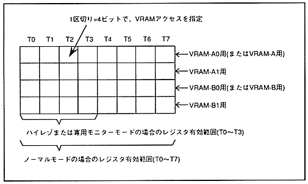

RBG1 is displayed, it is automatically performed. At that time, the VRAM-B0 and VRAM-B1 VRAM cycle pattern register settings are invalid.
∙ The VRAM cycle pattern register has registers corresponding to each bank of VRAM-A0, VRAM-A1, VRAM-B0, and VRAM-B1. If VRAM is not divided into two, the VRAM-A0 register is used for VRAM-A, the VRAM-B0 register is used for VRAM-B, and the VRAM-A1 and VRAM-B1 registers are not used. Hmm. The registers corresponding to each bank are divided into eight access timings from T0 to T7, and are accessed sequentially from the VRAM access indicated by the access command specified in the T0 bit. When the TV screen is in normal mode, T0 to T7 are all valid. When in high resolution mode or dedicated monitor mode, only T0 to T3 are valid and T4 to T7 are ignored. Figure 3.2 shows the VRAM cycle pattern register used during one cycle.
Figure 3.2 VRAM cycle pattern register

∙ Be sure to set “Do not access” to the remaining access timing after specifying the VRAM access necessary for display. Also, if the VRAM access address specified in the VRAM cycle pattern register is not within the specified bank, access will not be performed and correct screen display will not be possible.